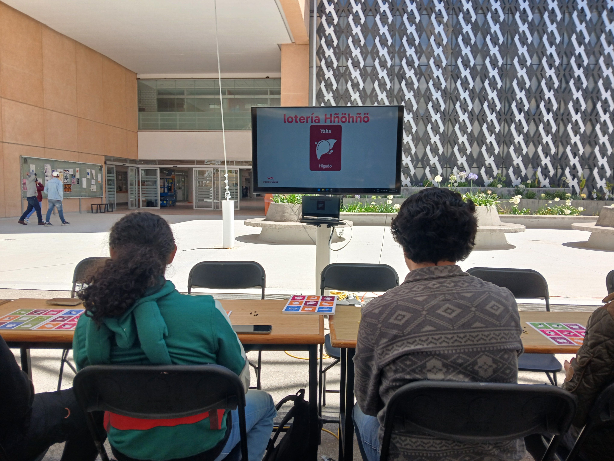
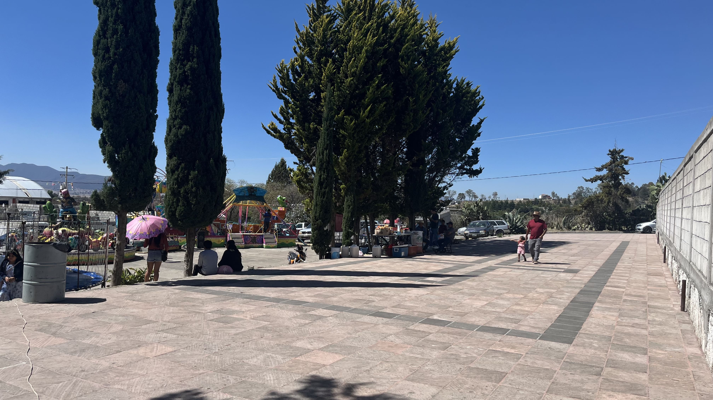
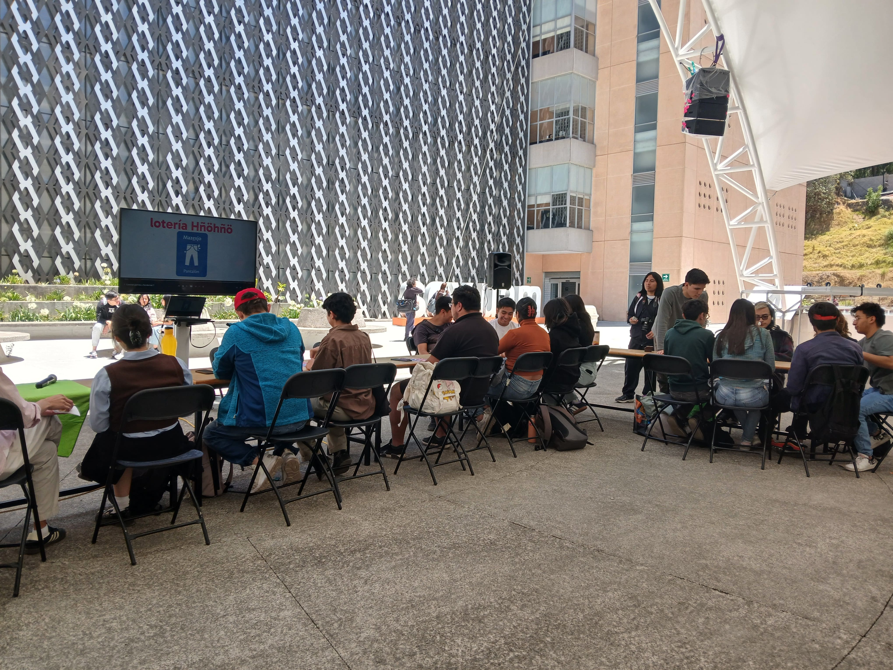
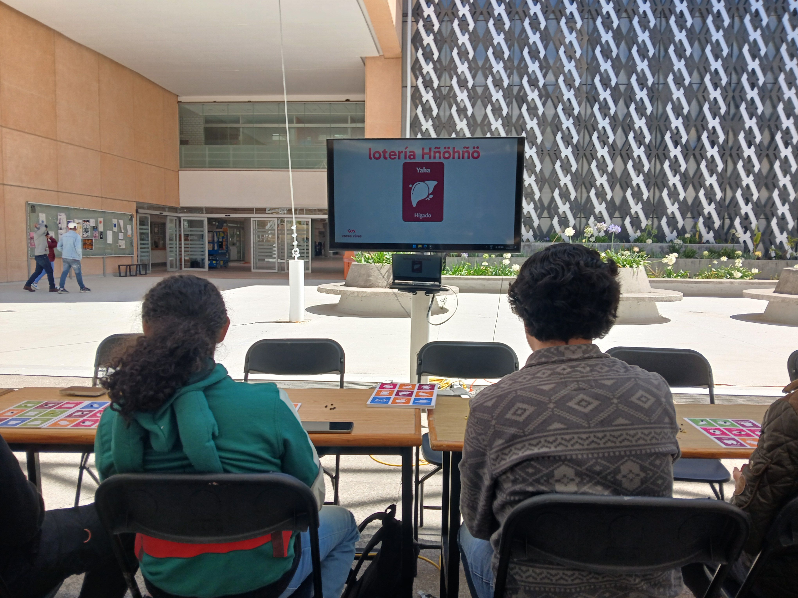
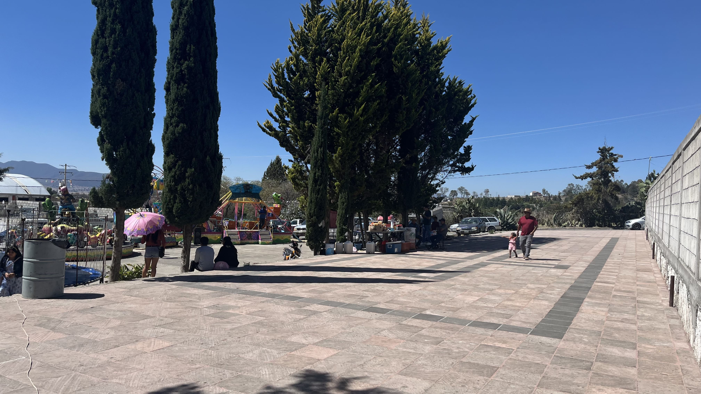
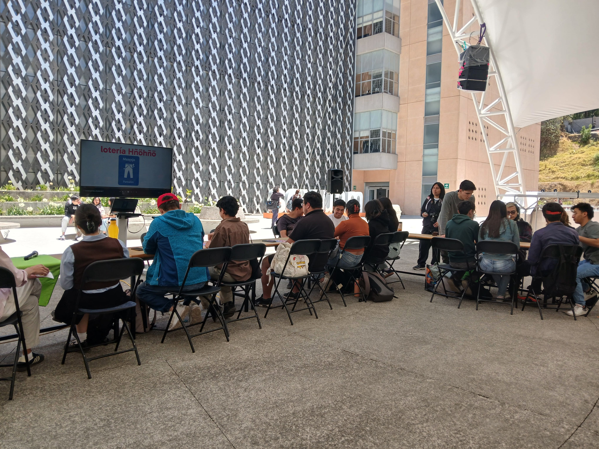
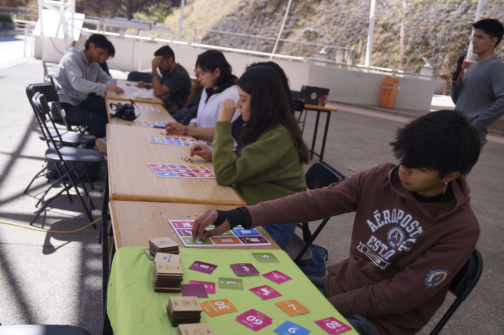
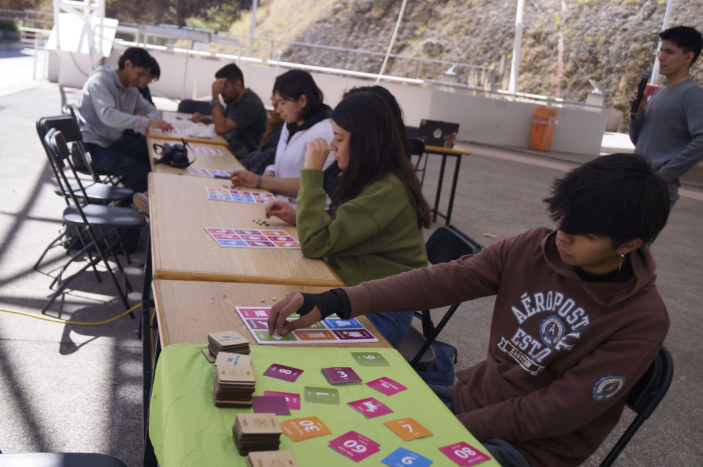

 

Es un proyecto integral que busca promover el aprendizaje y uso del Hñöhñö (variante del otomí), valorando las tradiciones que lo acompañan. Nos enfocamos en generar un impacto positivo en la preservación del idioma y la identidad cultural.
Surge como iniciativa para preservar y promover el Hñöhñö. Busca revitalizar la lengua y visibilizar las tradiciones culturales mediante herramientas educativas innovadoras.
Discriminación lingüística, falta de espacios educativos y migración afectan la transmisión del otomí. Urge implementar materiales didácticos y esfuerzos integrales para su preservación.


En estos municipios del estado de Querétaro se preserva el Hñöhñö como parte de la identidad cultural. Las comunidades impulsan la revitalización del idioma en lo social y educativo.
Los materiales didácticos que desarrollamos facilitan el aprendizaje del Hñöhñö, promoviendo su uso y preservación en las nuevas generaciones.
Materiales educativos basados en juegos tradicionales mexicanos para aprender de manera divertida.
MaterialesExplora videos que destacan aspectos clave de la cultura Hñöhñö.
Ver videosSumérgete en la cultura y tradiciones del Hñöhñö.
Volver a inicio